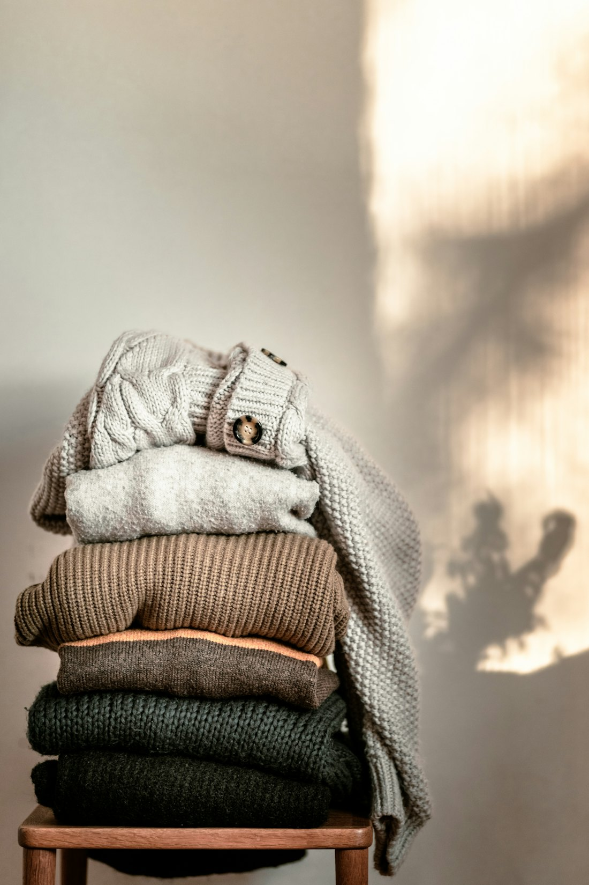

Issue N°14 · Notes on craftMakers4 min read
Inside the knitting workshop.
Meet the family who knit our Rib Knit by hand, twelve at a time.

The lane in Ludhiana is narrow enough that you hear the workshop before you see it. A steady clack, a pause, then the clack again. That is the sound of a knitting machine being pushed by hand. Inside, the Sandhu family is making twelve Rib Knits.
Yarn on cones
The merino arrives on cones, packed in cartons and stacked against the back wall. It is extra-fine, soft enough to wear against the neck. Baldev Sandhu checks every delivery himself. He pulls a length from a cone, runs it between finger and thumb, and holds it up to the window. If it is even, it goes on the shelf. If it is not, it goes back.
Every cone is weighed on arrival and the weight is written in a notebook, so each sweater can be traced to its yarn.
Baldev started the workshop forty years ago with a single machine. Now there are six, and the work is shared across three generations. His son Harjit runs the floor. Harjit’s wife, Manpreet, does the checking. Their daughter Simran does the collars.
The Sandhus are one of the three family workshops we work with. Our studio is in Jaipur, and we visit each of them every season.
One panel at a time
These are hand-flat machines. There is no motor in the carriage. Harjit pushes it across the needle bed, and every pass adds one row of rib. The front of a sweater takes a little over an hour. Then the back, then each sleeve. Every panel is knitted on its own. Nothing is cut from a larger piece of cloth.

A loose stitch is felt in the wrist long before it can be seen.
Harjit says that is the reason to do it by hand. He feels the tension in the carriage, and corrects it before the fault reaches the cloth. Each machine has its own rhythm, and he knows which one runs a little tight in the cold months.
When a panel comes off the machine it is laid flat and left overnight. Wool needs time to relax. A panel that rests keeps its shape. A panel that is rushed does not.
Linking, washing, drying
The next morning Simran takes over. She links the collar to the body stitch by stitch, loop on loop, so there is no seam to rub the neck. It is slow, close work, done under a lamp with her glasses pushed up. Simran learned it from her aunt, the winter after she finished college. She says the first collar is the hardest and the fiftieth is the one you remember.
Each sweater is then washed in cool water to settle the wool, and dried flat on a frame. Never hung, never tumbled. Last, Manpreet lays it on a measurement card, a board marked with chest, length and sleeve. A knit that is a centimetre out goes back to be reshaped. The ones that pass are folded in tissue, counted twice and packed for the road to Jaipur.
Twelve at a time
The Rib Knit is a chunky rib in cream, moss or rose, slightly cropped, with a high neck. Twelve sweaters make a batch, and a batch takes about four days.
We could ask for far more. We do not. A small batch keeps the pace of the work and the quality of the stitch. If a Rib Knit ever comes loose, send it to the studio: repairs are free for two years.
A day at the workshop
Twelve sweaters, about four days.
- 07:30Yarn checkBaldev opens the day’s cartons and holds each cone up to the light. Any that are uneven go back.
- 08:30First panelsHarjit pushes the carriage across the needle bed. The front of a sweater takes a little over an hour.
- 11:00TeaEveryone stops. Tea is poured and the count of finished panels is chalked up on the board.
- 12:30Panels restThe morning’s panels are laid flat under a cotton cloth. Yesterday’s are ready to be linked.
- 14:00LinkingSimran joins the collar and sleeves to the body, stitch by stitch, under the lamp.
- 16:30Wash and dryA cool wash, a gentle hand, then flat on frames in the shade of the courtyard.
- 18:00The cardManpreet lays each sweater on the measurement card. If it fits, it is folded and counted into the batch.